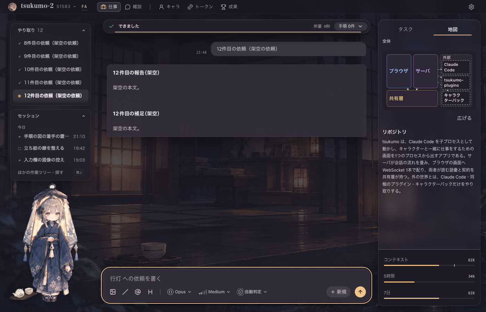
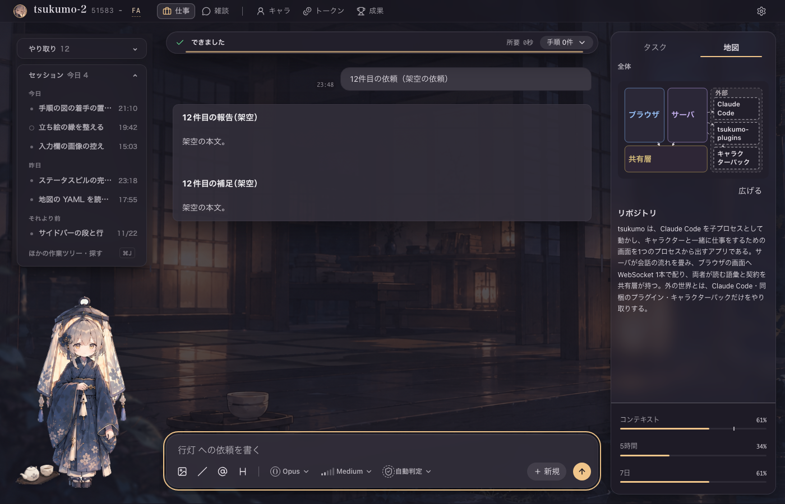
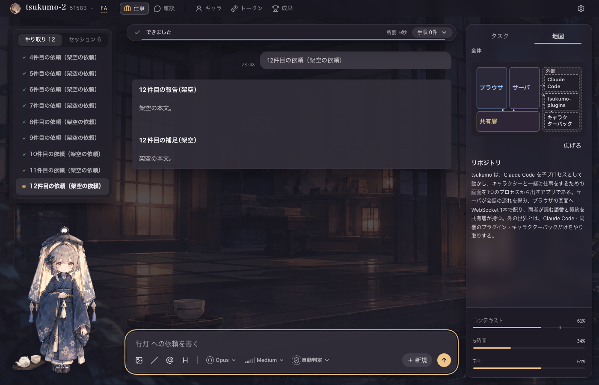
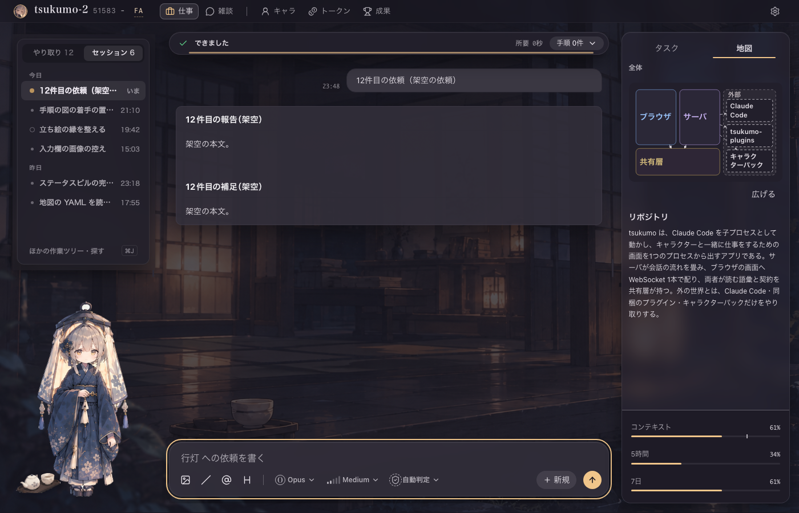
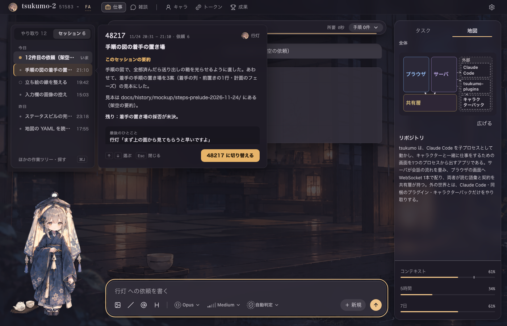
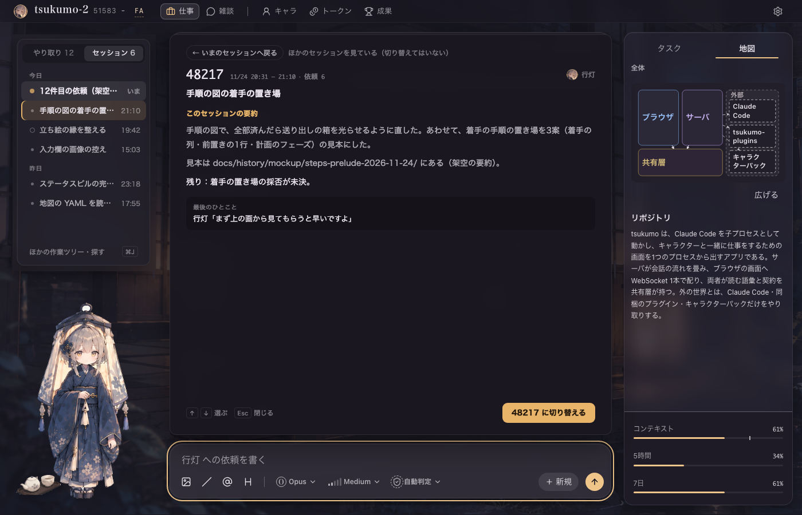
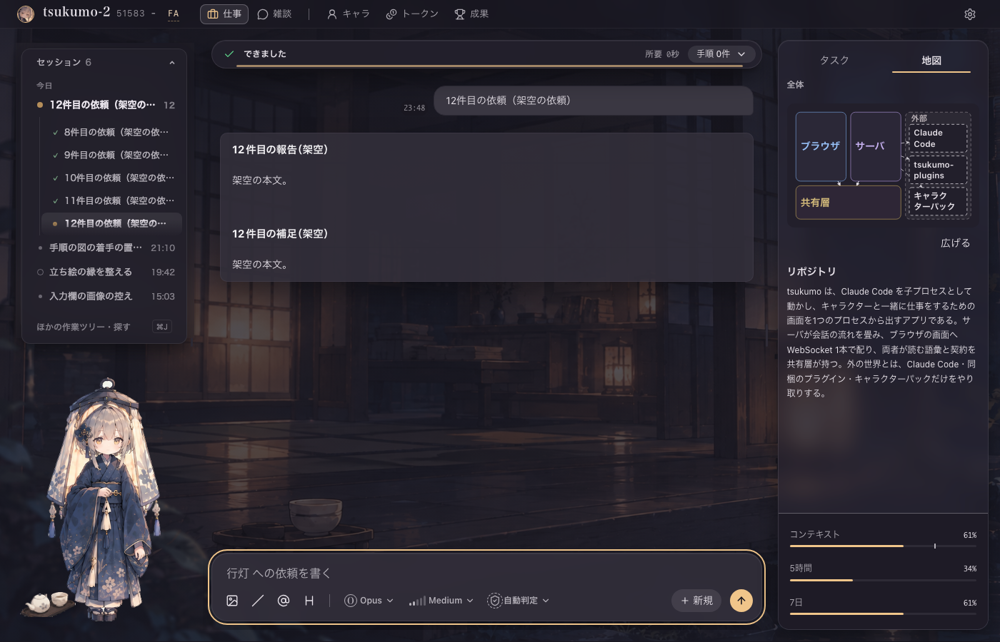

左の列にやり取りと過去のセッションを出す — 3案
土台は今の画面（疑似セッション turn-outline-many・1400×900）。左の列の札だけを描き直した。セッションの行は架空で、今の切り替えダイアログ（⌘J）と同じ材料（題・時刻・今日／昨日／それより前・ほかのタブで開いている印）だけを使う。ほかの作業ツリーと探す欄はダイアログに残す。場面は scene.html?form=now|a|a-fold|b|b-turns|b-detail|b-detail-main|c。
今過去のセッションはヘッダーの短縮ID（またはダイアログ）からしか見えない
案A 二段の札（推奨）やり取りの札の下に「セッション」の札。どちらも見出しの帯に畳める

両方開いた形。やり取りは高さを分け合い、末尾（いま）に寄せる

やり取りを見出しの帯に畳むと、セッションが昨日・それより前まで伸びる
案B 札の頭で切り替え1枚の札の頭に「やり取り｜セッション」。開いた形のやり取りは今と同じ高さ

やり取り側。見出しの代わりに切り替えが入るだけ

セッション側。いまのセッションは先頭で印つき
案B ＋ 選んだセッションの詳細行を押すと、切り替えダイアログの右側と同じ5つ（ID・期間と依頼数・要約・残り・最後のひとこと）と「切り替える」を出す。押しただけでは切り替わらない

B1 札の右隣に開くパネル（推奨）。札と同じ高さで流れの左半分に重なり、Esc・外を押すと閉じる。↑↓ で選び直すと中身が追う

B2 流れの面を差し替える。「いまのセッションへ戻る」で戻す。広いが、今の材料だけでは下半分が空く
案C セッションの木いまのセッションの下にやり取りを入れ子で開く。やり取りの開いた形は変わる

列の幅 232px では題が 9〜10字で切れる